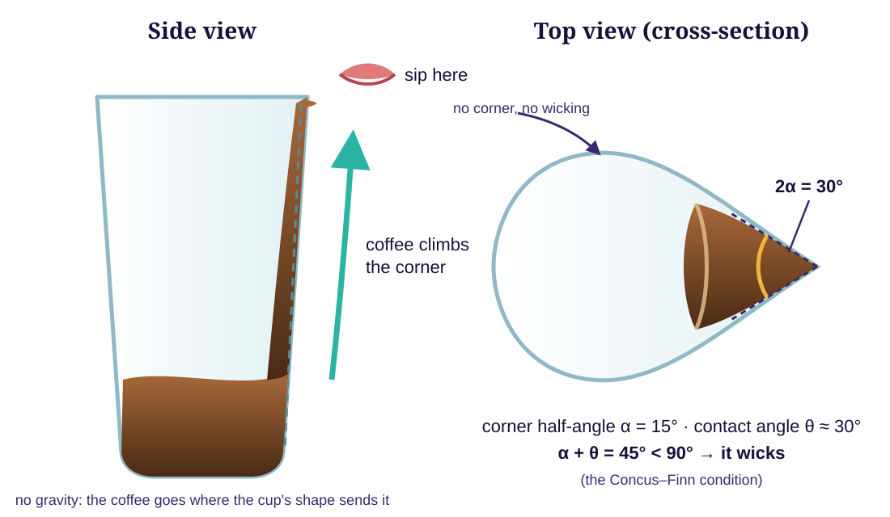
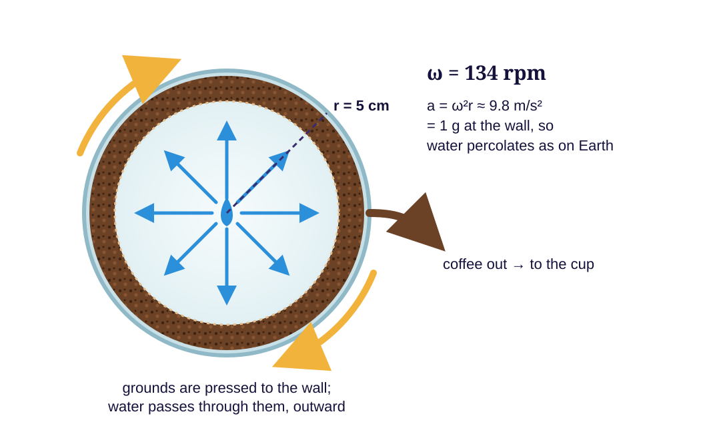

Abstract. In orbit, gravity no longer holds a liquid at the bottom of a cup, and it no longer pulls hot water down through coffee grounds. Surface tension takes over. The Drink Me Pod uses that instead of fighting it: a centrifugal brewer spins the grounds to give them one g of artificial gravity, and a capillary cup with a sharp interior corner carries the coffee to the drinker's lips by wicking. This document describes the physics, the design values and the safety case. Figures S1–S4 in the companion Supplementary Figures show the underlying curves.
Whether gravity or surface tension controls a liquid's shape is measured by the Bond number, the ratio of the two forces over a length scale L:
For coffee (density ρ ≈ 1000 kg/m³, surface tension σ ≈ 0.065 N/m when hot) in a cup-sized container (L = 4 cm), Bo is in the hundreds on Earth: gravity flattens the surface and holds the coffee down. On a space station the residual acceleration is around a millionth of g, and Bo falls below one in ten thousand. Surface tension then decides everything: coffee clings to whatever it wets, and a gentle nudge sends it out of an open cup as a wobbling sphere.
| Where | g (m/s²) | Bo (L = 4 cm) | What the coffee does |
|---|---|---|---|
| Earth | 9.81 | 241 | Sits in the cup |
| Mars | 3.71 | 91 | Sits in the cup, sloshes more |
| Moon | 1.62 | 40 | Sits, crema behaves oddly |
| Low Earth orbit | ≈ 10⁻⁵ | ≈ 0.0002 | Goes where the cup's shape sends it |
If surface tension is in charge, the cup's geometry can steer the liquid. A liquid that wets a wall creeps along an interior corner when the corner is sharp enough. Concus and Finn showed that for a wedge of half-angle α and a liquid with contact angle θ, the liquid rises along the corner without limit when
The Drink Me Pod cup has a teardrop cross-section whose point is an interior corner of 2α = 30° (α = 15°). Its inner wall carries a food-safe hydrophilic coating on which hot coffee shows θ ≈ 30°, so α + θ = 45°, comfortably inside the wicking region. The coffee gathers in the corner and climbs it to the rim, where the drinker's lips meet it — exactly like sipping from a normal cup.

The speed of the climb matters for the drinking experience. For capillary flow along a corner the wetted length grows roughly with the square root of time, as in Washburn's classic analysis of flow in a capillary. Bench tests in our drop tower suggest the coffee reaches the rim of a 9 cm cup in well under two seconds after docking; the design target is 1.5 s. As the drinker sips, the corner keeps refilling from the pool at the base until the cup is empty.
A drip or espresso machine relies on gravity — or on pressure plus gravity to keep the water in contact with the grounds and let air escape upward. In orbit there is no "up": the water forms bubbles and channels, extraction is uneven, and the grounds float. The Pod spins its brew chamber instead. Rotation at angular speed ω gives an apparent acceleration at radius r of
The grounds are pressed outward against a mesh at the chamber wall; hot water is injected at the center and flows radially outward through them, exactly as it would flow down through a filter on Earth. For one g at a chamber radius of 5 cm:

| Parameter | Value | Note |
|---|---|---|
| Chamber radius | 5 cm | Fits a standard station galley slot |
| Spin rate | 134 rpm | 1 g at the wall (eq. 4) |
| Water temperature | 93 °C | Boiling point is set by cabin pressure |
| Dose / yield | 15 g / 250 ml | The Hatter's ratio, 1 : 16.7 |
| Grounds bed thickness | 6 mm | Even radial flow |
| Brew time | 25–30 s | Then 3 s at 300 rpm to dry the puck |
| Spin-up / spin-down | 2 s each | Reaction wheel cancels the torque |
Spinning a mass inside a station would twist the station the other way. A counter-rotating flywheel in the base cancels the angular momentum, so the crew does not feel each espresso. Figure S3 shows the spin rate needed for other radii and gravity targets — the same brewer works on the Moon and Mars at a lower spin rate.
On Earth a cup cools mainly by natural convection: warm air rises off it and is replaced by cool air. In microgravity warm air does not rise, so the cup loses heat by conduction and radiation, and much more slowly unless the cabin ventilation blows across it. A simple lumped model gives exponential cooling toward cabin temperature with time constant
With 250 ml of coffee (m = 0.25 kg, c = 4186 J/kg·K) and an exposed area of about 0.02 m², a heat-transfer coefficient of 25 W/m²K (convection on Earth) gives τ ≈ 35 minutes; 6 W/m²K (still air in orbit) gives τ ≈ 2.4 hours. Figure S4 shows both curves. In practice the coffee stays in the pleasant drinking range four times longer in orbit — a feature, and also a safety consideration: the cup's outer wall is double-walled so that it is safe to hold at any time.
Milk foam behaves strangely without buoyancy: bubbles do not rise, so a flat white in orbit is uniformly foamy throughout. The Hatter considers this an improvement; the Caterpillar has asked "Who are you to decide?" A dedicated foam study is planned for Revision D.
Rabbit Hole Roasters is a fictional company made up for Deck Edit's sample project. The physics in sections 1–4 is real; the products, measurements and the Queen are not.